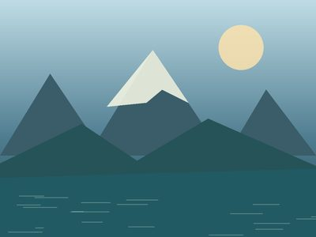
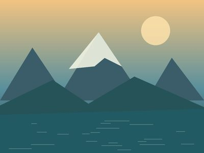

A Weekend in the Netherlands
Day 2 of 2
2
DAY
A little farther out
Thursday, May 15, 2025
Amsterdam
← 2025-05-14
← → keys or swipe change day · Esc returns to all days
One last walk, a quiet view, and time to take the long way back.
Thumbnail size
S
M
L
XL

10:05
★
HIDDEN

16:22
★
HIDDEN
← → navigate · Space play/pause · Scroll/pinch to zoom · I info · F fullscreen · Esc close
▶ Play
5s
Live
Info
Fullscreen
Close ×
×
Details
No location data for this file.
Download original file